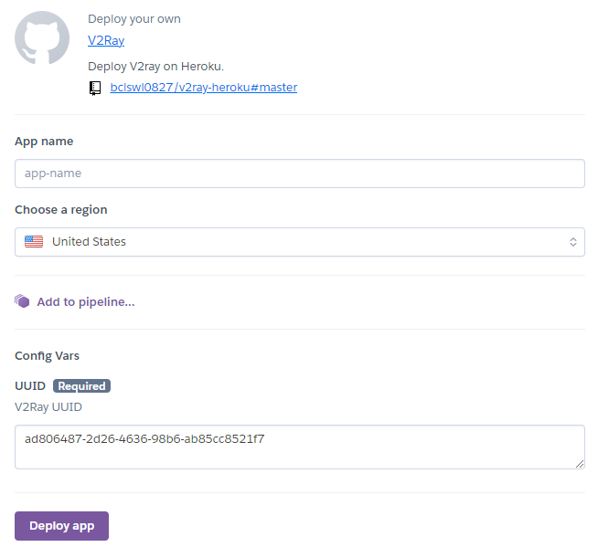
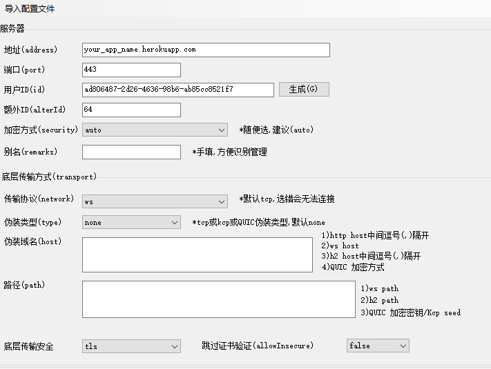
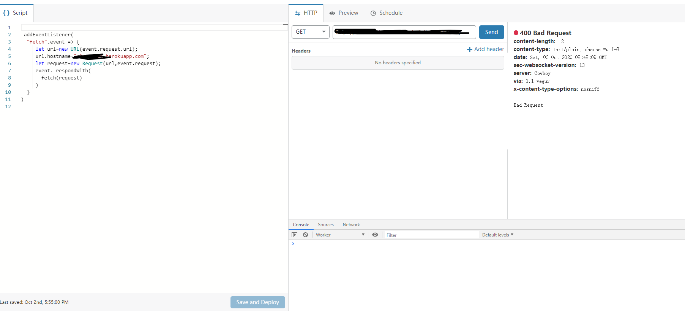

记一次免费的翻墙手段
总览
由于谷歌云的优惠力度降低，从十二个月的免费期降为三个月，显得不那么有吸引力。然而云服务器厂商之间的斗争从没停止，甲骨文和IBM也想在该领域分一杯羹，IBM甚至号称永久免费一个256m内存的服务器，不过发现在IBM的机器上用一键v2ray脚本总是无法成功，当我在寻找解决办法时，另一家云服务器提供商进入了我的视线，也就是今天的主角heroku,heroku同样提供免费服务，同时和IBM一样，仅用就可注册，同时部署更为方便。本次的主要参考是https://github.com/bclswl0827/v2ray-heroku,同时加以cloudflare转发和clash做均衡负载。
部署v2ray
- 注册一个
heroku账号，值得注意的是这一步是需要翻墙的，墙内的话谷歌人机验证会无法显示。 - 直接点击链接这里应该就可以看到这个界面之后填写app name并修改UUID(不修改的话会使用默认UUID，有一定的风险)，UUID生成工具在这里，最后点Deploy app即可
- Deploy成功后应该会得到形式如https://your_app_name.herokuapp.com/的链接，直接点击进入，如果
Bad Request就代表成功，之后打开v2rayN手动添加服务器，相关参数如下图，记得将服务器地址和UUID修改为自己的。之后在v2rayN里测试速度，应该在10k量级，这就代表v2ray部署成功了，下一步就是做转发
cloudflare转发
第一步依然是注册账号
注册好以后申请一个worker,并将worker里的内容替换为
addEventListener( "fetch",event => { let url=new URL(event.request.url); url.hostname="your_app_name.herokuapp.com"; let request=new Request(url,event.request); event. respondWith( fetch(request) } )然后点击send,出现红点🔴
400 Bad Request就成功了。之后记得点save。这段代码的功能就是做个转发，任何访问该worker的数据都会被转发到your_app_name.herokuapp.com去，同时从your_app_name.herokuapp.com发回worker的数据也会发回原路，本质上是一个二级代理。之后设置v2rayN里的服务器域名为刚才worker的域名，这时候测速应该在300k量级。网上流传寻找最适合自己网络条件的cloudflare ip来提高速度的方法，相关内容可以参考这个帖子，注意heroku的带宽是够的，决定你翻墙带宽的就是cloudflare的速度，所以找一个ip是能提很大程度上提高速度的。
利用clash做均衡负载
发现这种前端均衡负载并不能做到20+50=70，同时容易跳ip，因此放弃了。具体想做的可以参考这篇文章
写在最后
这次利用的是免费“容器”，而不是服务器，原理是基于docker的，刚开始看到的时候还觉得比较新，有点意思，但查了下发下很早以前就有老哥薅这种免费容器的羊毛了还不是别的公司，正是docker创始人Solomon Hykes的建立的公司dotCloud。dotCloud现在已经倒闭了，原因是竞争不过Amazon和Microsoft这种大公司，heroku背靠salesforce这棵大树，但也不是资源无穷的，还是且薅且珍惜吧。